ДП "Цукроавтомат - ИНЖ" предлагает изготовление, монтаж и техническое сопровождение систем автоматизации производственных процессов.
Услуги
-
-
На основании комплексного обследования наши специалисты дадут рекомендации по модернизации производства с целью повышения его экономической эффективности.
-
Выполняем поставку, монтаж и демонтаж любого оборудования. Осуществляем авторский надзор за монтажем.
-
Осуществляем первичные и повторные пусконаладочные работы. Сервисное обслуживание систем автоматизации в течение производственного сезона
Добро пожаловать на наш сайт
Вы находитесь на сайте дочернего предприятия "Цукроавтомат - ИНЖ".
Основной сферой деятельности нашего предприятия является автоматизация технологических, теплотехнических и химических процессов в сахарной промышленности и смежных отраслях пищевой промышленности.
Вот уже 19 лет мы успешно оказываем наши услуги на заводах Украины, России, Республики Беларусь, Казахстана и других стран ближнего зарубежья. Мы занимаемся разработкой и поставкой автоматизированных систем управления производственными процессами с последующим их сопровождением. Имея штат высококвалифицированных специалистов, мы можем помочь в решении вопросов проектирования и ввода в эксплуатацию производственных отделений и участков, модернизации и технического переоснащения имеющегося производства, выявлению его узких мест и недостатков с последующими рекомендациями по их устранению.
Последние работы
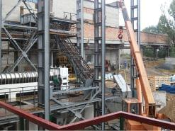
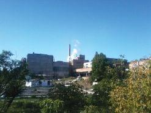
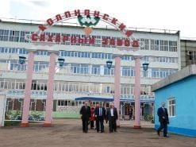
 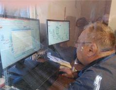
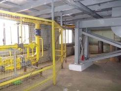
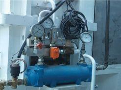
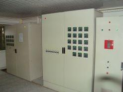
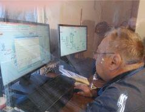
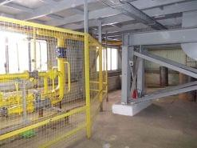
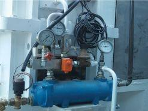
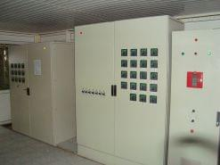
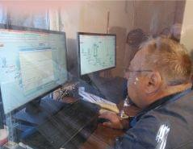
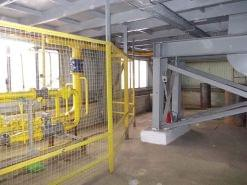
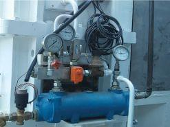
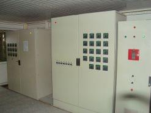
2016
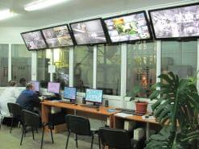
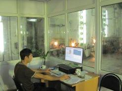
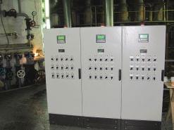
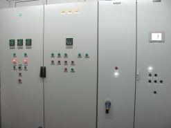
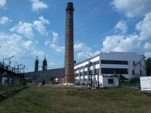
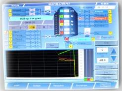
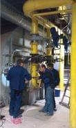
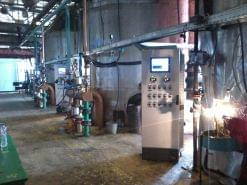
2015
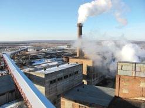
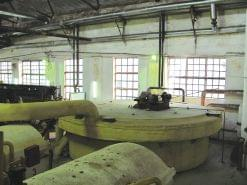
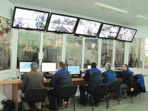
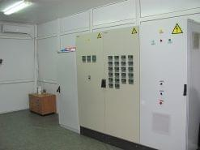
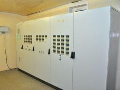
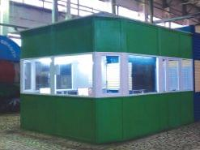
 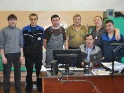
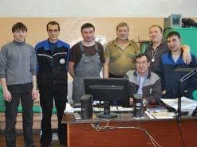
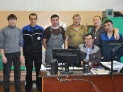
2014
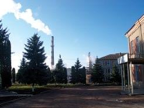
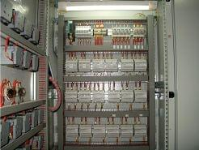
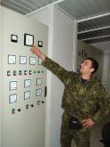
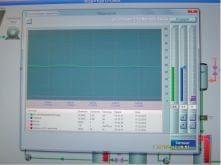
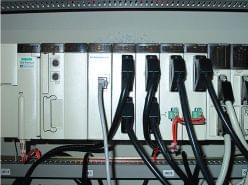
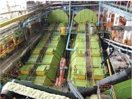
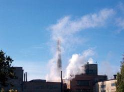
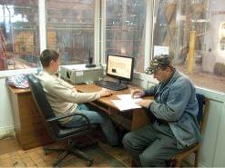
2013
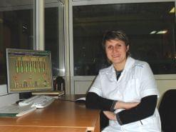
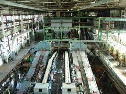
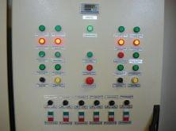
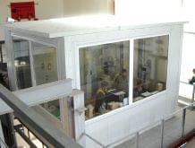
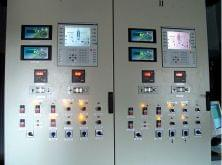
2012
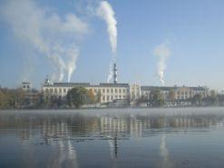
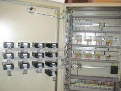
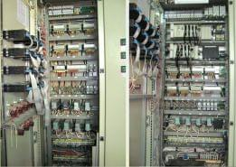
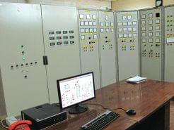
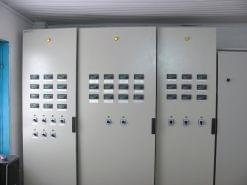
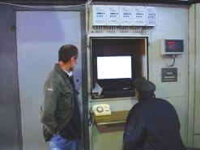
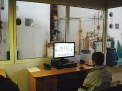
2011
- Капитановский сахарный завод (Украина)
- Колпнянский сахарный комбинат (Россия)
- Кшенский сахарный комбинат (Россия)
- Меркенский сахарный завод (Казахстан)
- Отрадинский сахарный комбинат (Россия)
- Радеховский сахарный завод (Украина)
- Рыльский сахарный комбинат (Россия)
- Селищанский сахарный завод (Украина)
- Тальновский сахарный завод (Украина)
- Цибулевский сахарный завод (Украина)
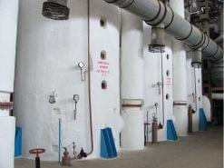
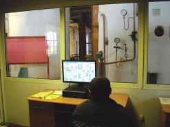
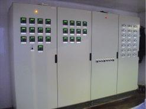